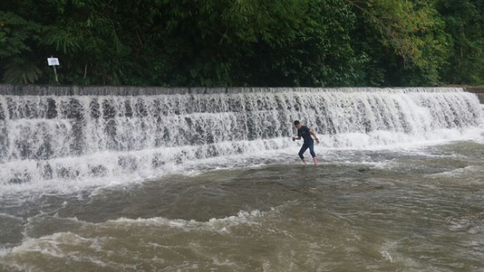
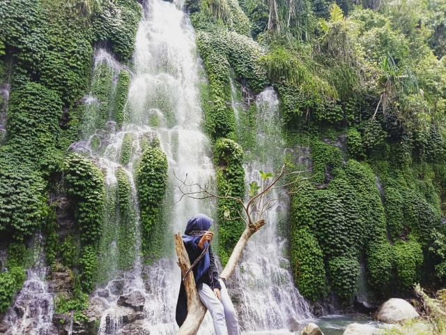

Universitas Sanata Dharma
Biodata Diri
Apdione Yona Kristanto
Perkenalkan saya Apdione Yona Kristanto dari prodi Informatika angkatan 23. Saya berasal dari Lahat Sumatera Selatan. Saya berasal dari keluarga yang sederhana. Ayahku buruh tani, dan ibuku bisa dikatakan hanya mengurus kami di rumah. Aku memiliki 2 saudara laki-laki, dimana keduanya memiliki rentang umur yang cukup jauh. Membahas tentang perkuliahan, sebenarnya saya tidak terlalu tertarik dengan jurusan informatika. Aku memilih prodi ini dikarenakan hobiku bermain game saja. Selebihnya mungkin akan mengalir. Berbicara tentang hobi, aku memiliki hobi seperti orang biasanya. Bermain alat musik seperti gitar dan piano, bermain game dan lainnya. Sepertinya aku memang suka bermain. Mungkin perkenalanku cukup sampai sini, selanjutnya aku akan memilih alasanku mengambil jurusan ini dan sedikit menjelaskan kota asalku. Mohon dibaca.
Alasanku memilih prodi informatika:
- Karena diterima di informatika dan aku tidak bisa menolak (sudah bayar uang registrasi)
- Karena peluang kerjanya besar
- Karena aku suka bermain game
Langsung saja aku berikan info menarik tentang kotaku tinggal sebelumnya
Hal Menarik Dari Kota Saya
| Hal Menarik | Fakta Menarik |
|---|---|
|  | Keunikan utama air terjun ini terletak pada struktur bertingkat empat yang menyerupai anak tangga, di mana air mengalir deras melalui setiap tingkatnya. Bentuk memanjang ini memberikan pemandangan eksotis dan menjadi daya tarik bagi para pengunjung. Sebelum diresmikan sebagai tempat wisata pada Oktober 2017, lokasi ini dikenal angker dan diyakini memiliki aura mistis yang kuat, sehingga jarang dikunjungi warga. Namun, berkat inisiatif Karang Taruna desa, area ini disulap menjadi destinasi rekreasi yang ramai pengunjung. Sayangnya, pada akhir tahun 2019, air bah dari hulu Sungai Lematang menghantam area ini, menyebabkan aliran air terhenti dan mengurangi daya tariknya sebagai objek wisata. |
|  | Kabupaten Lahat di Sumatera Selatan dikenal memiliki sejumlah air terjun (curug) yang memukau dengan keindahan alamnya. Berikut beberapa fakta menarik tentang beberapa air terjun di Lahat:
|
| Citimall Lahat adalah pusat perbelanjaan pertama dan terbesar di Kabupaten Lahat, Sumatera Selatan. Dibuka pada 21 Desember 2016, mal ini merupakan Citimall keempat di Indonesia. Beberapa tenant utama yang hadir di Citimall Lahat antara lain Hypermart, Optik Melawai, Funworld, dan Platinum Cineplex. | |
 |
Tempoyak adalah hasil fermentasi daging buah durian yang menjadi bagian integral dari kuliner tradisional di Lahat. Salah satu hidangan khas yang populer di Lahat adalah Salai Tempoyak, yang menggabungkan ikan salai dengan tempoyak sebagai bumbu utama. |
| Pempek, makanan khas Sumatera Selatan yang terbuat dari campuran ikan dan tepung sagu, telah menjadi bagian integral dari kuliner di Kabupaten Lahat. Meskipun asalnya dari Palembang, pempek di Lahat memiliki cita rasa dan variasi yang khas. |